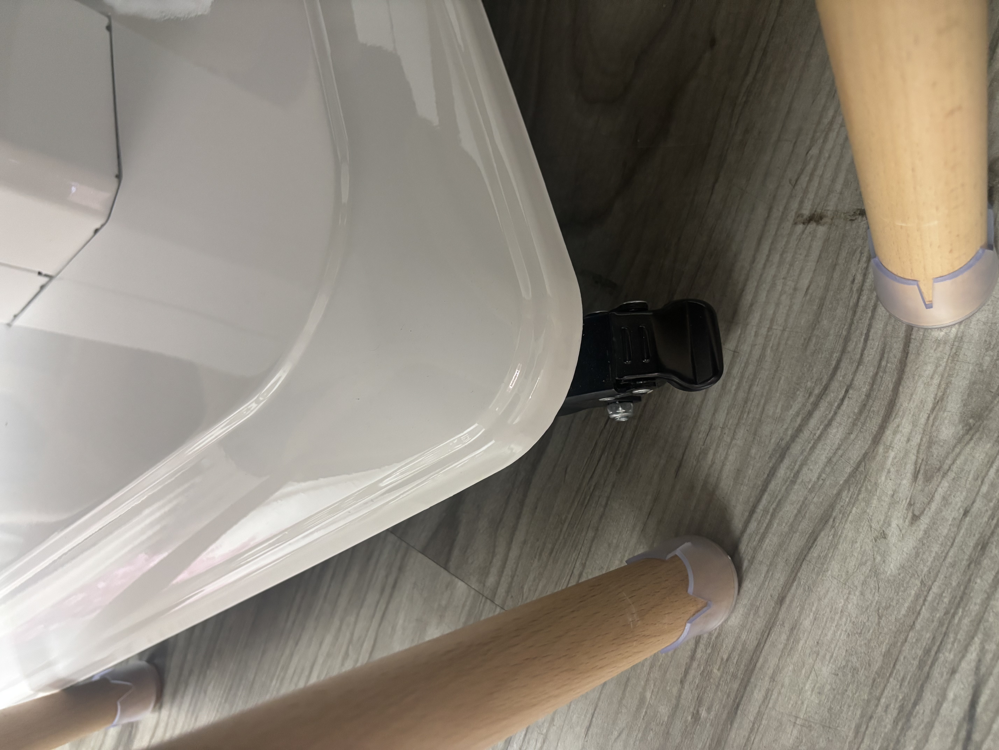

房間檢查列表
🔄 重設（ 會清除所有 √ ）🔄
A) 事前準備
A1) 確認人數
用作預備即棄拖鞋、飲品、夾公仔機硬幣數量
A2) 確認入場時間
預計需要 45分鐘 - 60分鐘 整理場地
必須於下場客人
入場前20分鐘
離開場地
A3) 檢查是否需要預備飲品
部份客人並無享用飲品福利，則無需預備飲品
A4) 檢查是否需要夾公仔機硬幣福利
部份客人並無享用夾公仔機硬幣福利，則無需預備$5硬幣
A5) 檢查是否需要騰空雪櫃放生日蛋糕
部份客人需要騰空雪櫃放置生日蛋糕，詳細做法請參照
A6) 收取大門密碼
輸入密碼後按「#」號
請記得除鞋内進
A7) 瞭解常用清潔用品位置
吸塵機於簾後方，使用前後需要充電
且可按鍵與長管道分離，長管道用於清潔地下，主機可用於清潔凳/沙發/臺面塵埃
乾紙巾於電視櫃上方，如沒有可於電視抽櫃拿備用
濕紙巾於桌游櫃上方，如沒有可於電視抽櫃拿備用
濕毛巾於洗手間洗手盤上方，如需替換可於洗手間鏡面櫃左上角拿取
香氛噴霧於桌游櫃上方，如沒有可於電視抽櫃拿備用
備用垃圾袋於桌游櫃上方，如沒有可於電視抽櫃拿備用
卷廁紙於洗手間鏡面櫃內，如沒有可於電視抽櫃拿備用
一次性手套可以於洗手間鏡面櫃拿取
A8) （如環境異常惡劣）拍照及告知
異常惡劣包括場地非常混亂、有嘔吐物等
可根據常理判斷
B) 門外位置
B1) 補即棄拖鞋
拖鞋在門外白色長凳收納空間內，把白色長凳打開，可以看到即棄拖鞋。
把全新的即棄拖鞋，放到鞋櫃架上頂層的奶白色盒子
即棄拖鞋預備數量 = 客人人數 + 1
B2) 清理其他宣傳單張&垃圾
地上/閘門手柄有機會有其他無謂宣傳單張，請撿起並扔掉
如見到有其他垃圾（主要是即棄拖鞋），請順手清理
B3) 補宣傳小冊子至五份
閘外有存放partyroom宣傳小冊子的半透明架，於鐵閘招牌旁邊
如果架中少於三份小冊子，請於窗簾後右邊（較矮）儲存櫃頂上大膠袋中
拿取並保滿至五份小冊子，放置於透明架中
C) 桌遊櫃
C1) 補濕紙巾&香氛噴霧（頂部）
桌遊櫃頂部會放濕紙巾及香氛噴霧
如沒有濕紙巾 / 香氛噴霧，請打開電視櫃抽櫃拿取 全新一包濕紙巾 / 全新一罐香氛噴霧
C2) 整理桌遊（最底層）
整理最底層，檢查是否有遊戲缺失
確保所有桌遊放到容器中，放（由左至右）
1) 足球彈棋
2) 竹籤
3) 大盒（內有猜猜我是誰&企鵝敲冰磚）
4) 小盒（內有青蛙平衡樹）
5) 桌遊指南
6) 按摩器 & 錘仔
C3) 整理桌遊（第二層）
整理第二層，檢查是否有遊戲缺失
確保所有桌遊放到容器中，放（由左至右）
1) Rummikub
2) 榮耀寶石
3) 阿瓦隆
4) 三國殺
5) 德國心臟病
6) 矮人礦工
7) 誰是牛頭王
8) 作弊飛蛾
9) Uno No Mercy
10) Monopoly Deal
11) 狼人殺
12) 啤牌
13) Uno
C4) 整理桌遊（第三層）
整理第三層，檢查是否有遊戲缺失
確保所有桌遊放到容器中，放（由左至右）
1) 魚蝦蟹（連骰仔）
2) 骰盅杯
3) 小盒（內有以酒坑人）
4) 行酒令
5) 啤酒殺
6) 大黑盒（內有Poker及籌碼）
D) 麻雀檯
D1)（如白色板覆蓋綠色絨毛桌面）拿掉白色板
將白色板拿起，放到桌遊櫃後方
D2) （如檯面有麻雀）清空檯面麻雀
於電視櫃上方電源塔及麻雀機底部打開電源
按「紅色」鍵，把臺面所有牌推進坑中
再同時按任意對角兩個綠色按鍵約五秒
所有牌會收納到麻雀機內部
D3) 打開麻雀檯抽櫃清理垃圾
抽櫃中有機會有紙巾 / 飲品飲管塑膠袋，請清理
亦有機會有籌碼，請放回桌遊櫃第三層大黑盒（內有Poker及籌碼）
D4) 清理檯面及檯面邊
吸塵機於窗簾後放，可與管道分離，拆除至小型吸塵機
濕紙巾於桌遊櫃頂部
D5) 清理白色凳
濕毛巾於廁所洗手盆上掛着，用作清理枱面/櫃面/凳面
如果麻雀凳上有明顯污跡，請使用濕紙巾/濕毛巾清理
如果麻雀凳上有塵埃，請使用乾紙巾清理
D6) 移動麻雀檯到合適位置
麻雀檯下方有車輪，移動後請鎖上
麻雀檯角落應在兩塊牌正中下方，開關制面向switch&小風扇方向

D7) 移動麻雀凳到合適位置
確保麻雀凳方向正對麻雀檯，以及近桌遊櫃的白色凳可坐到人
如近桌遊櫃的麻雀凳未能坐到人，請再次調整麻雀檯位置
D8) 檢查麻雀檯是否操作正常
於電視櫃上方電源塔及麻雀機底部打開電源
按「紅色」鍵，看看是否正常升起一組牌（藍色/綠色）
再按「紅色」鍵，把臺面所有牌推進坑中
再按「紅色」鍵，看看是否正常升起另一組一組牌（綠色/藍色）
再按「紅色」鍵，把臺面所有牌推進坑中
再同時按任意對角兩個綠色按鍵約五秒
所有牌會收納到麻雀機內部
E) 白色大檯
E1) 清理枱面
即使桌面上沒有明顯污漬，亦需要清潔枱面
濕毛巾於廁所洗手盆上掛着，用作清理枱面/櫃面/凳面
E2) 清理白色凳
如果白色凳上有明顯污跡，請使用濕紙巾/濕毛巾清理
如果白色凳上有塵埃，請使用乾紙巾清理
E3) 移動白色大檯到合適位置
大檯下方有車輪，移動後請鎖上
移動大檯到與地毯相距約一個腳掌的距離
E4) 移動白色凳到合適位置
靠牆方向放置6張白色凳
靠麻雀檯方向放置2張白色凳在中間空隙，1張在靠門空隙
靠簾方向放置2張白色凳
F) 飾物架
F1) （如電池無電）更換飾物燈電池
電池於電視櫃上方 2A電池均可充電
只需更換透明盒内2A電池
F2) 更新日期
更新至下組客人到訪的日期
F3) 檢查留言板留言
如見到含粗言穢語/色情的留言牌，請將他反轉
G) 花牆搖搖凳
G1) 移動搖搖凳圓形地架至合適位置
移動搖搖凳圓形地架，與廁所牆身距離約一個腳掌的位置
而且完整地覆蓋圓形地氈
G2) 清潔藍色搖搖凳
可使用吸塵機吸走頭髮碎/垃圾碎片
可使用濕紙巾/毛巾清潔明顯污垢
G3) 撿起圓形地毯頭髮
請使用手撿起明顯的頭髮
G4) 撿起花瓣放到圓形地毯
請將掉到地上的花瓣放到圓形地毯上
深紅色玫瑰放到小半圓，其餘花瓣放到大半圓
H) 沙發
H1) 清潔沙發
可使用吸塵機吸走頭髮碎/垃圾碎片
可使用濕紙巾/毛巾清潔明顯污垢
H2) 清潔沙發咕臣
可使用吸塵機吸走頭髮碎/垃圾碎片
可使用濕紙巾/毛巾清潔明顯污垢
H3) 放置沙發咕臣到合適位置
左右兩側放大咕臣，黑色拉鏈位置向下
中間放大咕臣，一個偏左，一個偏右，拉鏈位置向後方
H4) 移動沙發到合適位置
沙發較輕 可以移動
將沙發靠近洗手間門一側
推到貼近大地毯最側面位置
移動至與搖搖凳距離約一個腳掌位置
I) 大地毯空間
I1) 清潔地毯
可使用吸塵機吸走頭髮碎/垃圾碎片
部分垃圾碎片（如衣服毛織）需要徒手撿起
I2) 清潔兩張懶人沙發
可使用吸塵機機體吸走頭髮碎/垃圾碎片
部分垃圾碎片（如黏附的頭髮）需要徒手撿起
I3) 清潔兩張圓形坐墊
可使用吸塵機機體吸走頭髮碎/垃圾碎片
部分垃圾碎片（如黏附的頭髮）需要徒手撿起
I4) 清潔兩張n型白凳
可使用吸塵機機體吸走頭髮碎/垃圾碎片
可使用濕紙巾/毛巾清潔明顯污垢
I5) 清潔白色茶几
可使用吸塵機機體吸走垃圾碎片
可使用濕紙巾/毛巾清潔明顯污垢
I6) （如被客人打開）清潔擴大白色茶几
白色茶几可以翻開 且順時針旋轉
成為大型正方形桌面
請清潔好大型正方形桌面
可使用吸塵機機體吸走垃圾碎片
可使用濕紙巾/毛巾清潔明顯污垢
I7) 調整茶几高度及大小
白色茶几可以翻開 且順時針旋轉
成為大型正方形桌面
請清潔好後則把白色茶几蓋上 且逆時針旋轉
善用桌下側手把 可按壓調較高度
把高度調教至約大髀中間高度（稍微比沙發座位高）
I8) 移動懶人沙發、圓形坐墊、n型白凳到適合位置
懶人沙發、圓形坐墊、長型白凳都是貼近電視櫃
由 麻雀檯方向 到 夾公仔機方向 排序為：
1）靠近麻雀檯的懶人沙發的最側面 放到貼近大地毯最側面位置
2）橫置兩個n型白凳 於電視櫃中間部分
3）每個n型白凳下都放一個圓形坐墊
4）靠近夾公仔機的懶人沙發 有一半是在地毯位置外
I9) 移動白色茶几到適合位置
白色茶几在沙發正中間位置
不是
電視櫃中間
與沙發距離大概兩個腳掌距離
I10) 放置冷氣遙控在白色茶几上
放置冷氣遙控在白色茶几上 靠近麻雀檯方向
J) 電視櫃
J1) 清潔電視櫃及設備表面
可使用吸塵機吸走頭髮碎/垃圾碎片
可使用乾紙巾抹走塵埃
使用濕紙巾清潔明顯污垢 儘量避免使用濕毛巾
J2) 檢查小型風扇
確保小型風扇已使用TypeC線 連接上電源
風扇向著麻雀機方向
J3) 檢查及放置Switch、Switch手制、遊戲卡
把所有Switch手制放到黑色充電座：先插上Switch手制、再插上黑色邊
檢查遊戲卡數量：打開遊戲主機卡槽及遊戲卡盒，應有兩個遊戲卡（Mario Party及Mario Kart）
J4) 檢查及放置PS5、PS5手制、遊戲碟、TypeC線
把其中兩個PS5手制放到黑色充電座：反轉插上Type C插頭
把其餘兩個PS5手制放到PS5白色底盤充電座
檢查遊戲卡數量：打開遊戲碟盒，應有最少有兩個遊戲碟（賽車遊戲、足球遊戲、籃球遊戲）
其中一張碟有機會在PS5內，無需特別檢查
把一條Type C線放到PS5白色底盤遙控器槽
J5) 放置備用3A小電池盒、小電視遙控、大電視遙控、雲燈遙控、電池測電器
依以下次序 從 PS5方向 至 喇叭方向 放置：
1）備用3A小電池盒 不可充電
如沒剩餘電池 請於白色大檯近沙發方向抽櫃取用新一盒
2）小電視遙控
3）大電視遙控
4）雲燈遙控 反面標籤朝上
5）電池測電器 標籤朝上
J6) 更換及充電2A中電池、18650長電池
更換重咪、飾物架燈透明盒內2A中電池
更換輕咪、外置咪接收器內18650長電池
請使用電池檢測器判斷電池電量
J7) 放置兩個指南
完整指南打直放在遊戲卡碟盒與PS5之間
點唱機指南放在中間的喇叭面上
J8) 檢查、放置及充電平板
檢查平板是否能正常打開 不設任何密碼
為平板插上Type C線
放置在中間的喇叭面上 疊在點唱機指南上方
J9) 檢查小電視、Switch、PS5、大電視、點唱機
依序開啟及檢查以下裝備能否正常開啟：
1）打開小電視
2）打開Switch，於小電視選擇合適HDMI，再關掉Switch
3）打開PS5，於小電視選擇合適HDMI，再關掉PS5
4）打開大電視，再關閉小電視
5）打開點唱機，於大電視選擇合適HDMI，再關掉點唱機
6）關閉大電視
J10) （如咪上有咪套）移除咪套
把上一組客人使用過的咪套移除及掉去
J11) 放置點唱機遙控器、輕咪及重咪
點唱機遙控器放在擴音器上方、點唱機前方
輕咪及重咪放在擴音機上方其餘位置、點唱機右方
J12) 預備備用咪套
備用咪套於電視櫃最右方
拿取全新三包白色備用咪套
放置於近公仔機喇叭頂部
K) 夾公仔機
K1) 清理夾公仔機表面塵埃
使用乾紙巾抹走表面塵埃
K2) （如享用夾公仔機福利）預備硬幣
準備硬幣數量 = 人數
放置於黃色盤中
L) 雪櫃
L1) 整理雪櫃表面塵埃
使用乾紙巾抹走表面塵埃
確保放妥介紹版及宣傳小冊子
L2) 補宣傳小冊子至五份
雪櫃頂有存放partyroom宣傳小冊子的半透明架
如果架中少於三份小冊子，請於窗簾後右邊（較矮）儲存櫃頂上大膠袋中
拿取並保滿至五份小冊子，放置於透明架中
L3) （如享用飲品福利）補飲品
備用飲品位置於遊戲櫃下方、礦泉水/未開封飲品於簾後儲物櫃前方位置
如需要騰空雪櫃，請參考L4
正常擺放位置：4款汽水於內格頂層、2款冷泡茶於門頂層、4款紙包飲品(不包括冷泡茶)於內格中層、礦泉水於內格底層、1款汽水於門底層
如人數少於或等於4人：隨機5款汽水各兩罐、隨機2款冷泡茶各兩包、隨機4款紙包飲品(不包括冷泡茶)各兩包、礦泉水兩支
如人數5人至9人：隨機5款汽水各三罐、隨機2款冷泡各茶三包、隨機4款紙包飲品(不包括冷泡茶)各三包、礦泉水三支
如人數10人或以上：隨機5款汽水各三罐、隨機2款冷泡各茶三包、隨機4款紙包飲品(不包括冷泡茶)各四包、礦泉水四支
L4) （如需要騰空雪櫃放蛋糕）改裝雪櫃
把內格中間透明間隔取出、亦把底層較高封條取出
先把封條對角放在雪櫃內格、再把中間透明間隔放面
可以騰空位置放蛋糕
內格底層改為放紙包飲品、門頂層及門底層改放汽水
未能放到雪櫃內的飲品，整齊地放在高臺
M) 高臺
M1) 清潔高臺、高臺凳、街機
可使用乾紙巾抹走塵埃
可使用濕紙巾清潔明顯污垢 街機儘量避免使用濕毛巾
M2) 檢查街機
開啟白色電源盒及街機開關後
街機螢幕會自動打開
M3) 收納飛鏢
把6支飛鏢收好，放在高臺上
N) 廁所
N1) （如有大量垃圾）清理廁所小垃圾桶
更換新垃圾袋
N2) 吸塵/拖地
吸走地上毛髮
如有水漬請拖地
N3) (如馬桶衛生情況惡劣)清潔馬桶
請戴上手套清潔馬桶、馬桶邊、馬桶座廁板
N4) 放置廁所拖鞋
廁所拖鞋放置於廁所內門口前
O) 最後整理場地
O1) 整個場地地下吸塵
使用吸塵機吸塵整個場地
O2) 清理桌遊櫃旁垃圾桶
更換新垃圾袋
並把所有垃圾掉到外面綠色垃圾筒
O3) 噴香氛
於房間各處噴香氛
並須於廁所中噴多次
O4) 關閉電源
關閉所有電源（除簾後空間電源外）
O5) 鎖好門窗及拉好鐵閘
確保關上大門後，大門已自動上鎖